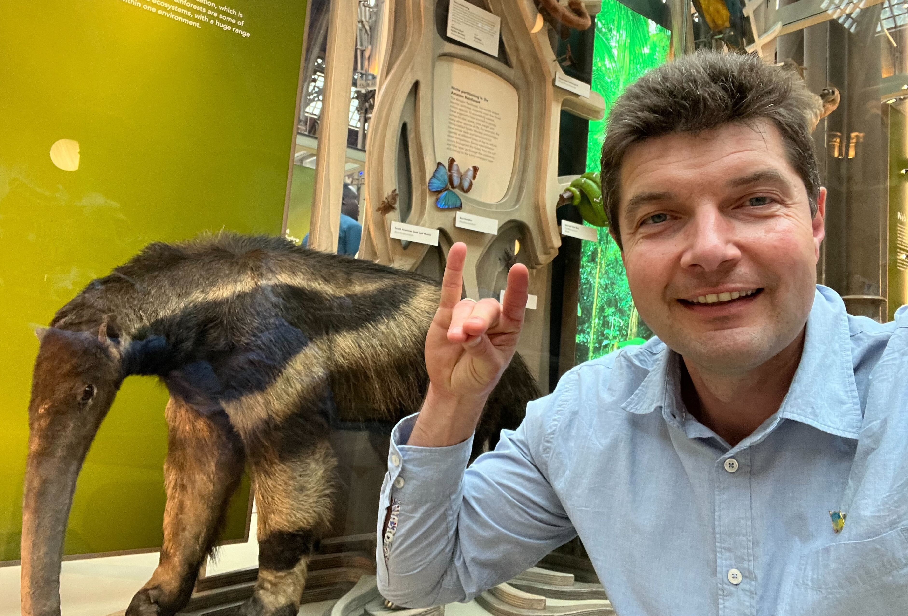

Showing the UCI Anteater hand sign next to the anteater model in the Oxford University Museum of Natural History. More formal headshot and bio.
Showing the UCI Anteater hand sign next to the anteater model in the Oxford University Museum of Natural History. More formal headshot and bio.
{kind=link}
Volodymyr M. Minin
Professor, Department of Statistics
Associate Director, Infectious Disease Initiative
Honors Program Director, School of Information & Computer Sciences
University of California, Irvine
Co-Director, Irvine Summer Institute in Biostatistics and Undergraduate Data Science (ISI-BUDS)
Donald Bren Hall 2068
Box 354322
Irvine, CA 92697-1250

Professor, Department of Statistics
Associate Director, Infectious Disease Initiative
Honors Program Director, School of Information & Computer Sciences
University of California, Irvine
Co-Director, Irvine Summer Institute in Biostatistics and Undergraduate Data Science (ISI-BUDS)
Donald Bren Hall 2068
Box 354322
Irvine, CA 92697-1250
News and highlights:
news archive
- [June 2025] Group member Isabel Zhang was selected as a Summer Undergraduate Research Program Fellow for Summer 2025!
- [June 2025] Group members Jessalyn Sebastian and Christian Bernal Zelaya are attending WNAR 2025 in Whistler, B.C., Canada! Update: Congradulations to Christian for winning the best WNAR student oral presentation award and to Jessalyn for being a runner up in the WNAR student written paper competition!!!
- [June 2025] Catalina Medina successfully defended her dissertation! She is starting her faculty job as an Assistant Professor of Data Science at CSU Channel Islands in Fall 2025.
- [May 2025] Catalina Medina's first dissertation chapter is officially published in PLoS Computational Biology: Accounting for reporting delays in real-time phylodynamic analyses with preferential sampling.
- [April 2025] Group member Christian Bernal Zelaya wins NSF GRFP award that will support his PhD studies for the next 3 years! Congrats to Christian!
- [March 2025] Congrats to Jessalyn Sebastian for successfully passing her Advancement to Candidacy exam! She is now a PhD candidate!